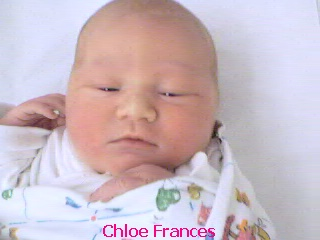
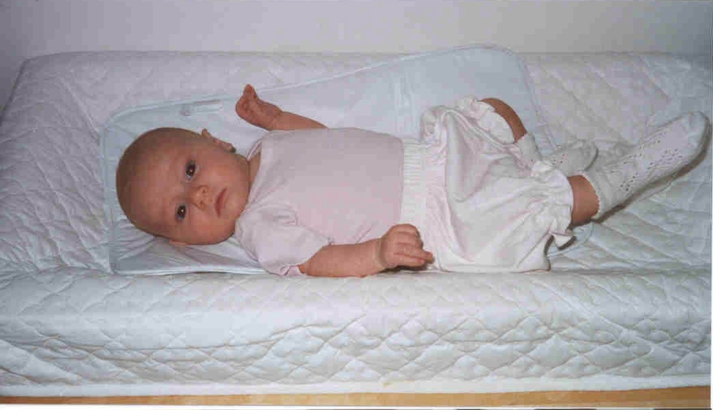

|
|
Chloe's ArrivalOn July the 1st 2000, Chloe was born. Being born in the information age, one of the first things Chloe had done was to have her picture placed on the web by the hospital.  However, as we all know, when you have just popped out of the womb you are never at your best. Much better to be snapped while relaxing at home.  There are some more photos of Chloe in the photo album here.
This page was last updated at 10:54:09 on 05 January 2004 by Neil Lawrence (neil@thelawrences.net)
|